Table of Contents
The ParticleEditor is a component of the BigWorld toolset that provides a graphical interface for the creation of a BW particle system XML file.
BigWorld particle systems can be defined in three ways:
-
C coding.
-
Python scripting.
-
XML file.
Once the particle system is created, the game script can load the XML file and place an instance of a particle system in the game world. This can be done in two ways:
-
As part of the scenery
By placing a particle object in WorldEditor (a ChunkParticles chunk item).
-
As a dynamic entity
Through Python scripting or C coding. For details, see Loading a particle system via code.
ParticleEditor window
For details on how to start this and other BigWorld tools, see Starting the Tools.
The list below describes the menu items available in ParticleEditor:
-
File → Open particle directory
Performs the same function as the General sub-panel's Open Particle Folder buttonA —
 —.
—.
-
File → Save particle system
Performs the same function as Systems panel's Save buttonA —
 — and Save
toolbar buttonB ——.
— and Save
toolbar buttonB ——.
-
File → Reload all textures
Reloads textures used by the particle system.
Changes made to textures in third-party applications will not be visible until the particle system is reloaded or this option is selected.
-
File → Exit
Closes the application.
The user will be prompted to save any changes made to the scene.
-
Edit → Undo
Undoes the most recent action.
Multiple actions can be undone. The undo list extends to the state of the world when ParticleEditor was last started.
Each action undone is added to the redo list.
Also accessible via the Undo toolbar buttonB —
 —.
—.
-
Edit → Redo
Redoes the most recent undone action.
Multiple actions can be redone. The redo list contains one entry for each undone action.
Also accessible via the Redo toolbar buttonB —
 —.
—.
-
View → Toolbars → Main ToolbarB
Toggles the toolbar's visibility.
-
View → Status bar
Toggles the status bar's visibility.
For details on the status bar, see Status bar.
-
View → Show Action Selection
Toggles the visibility of all panels.C
-
View → Show Asset Browser
Toggles the visibility of the Asset Browser panel (for details on this panel, see Asset Browser panel).
-
View → Show Messages
Toggles the visibility of the Messages panel (for details on this panel, see BigWorld Messages panel).
-
View → Load default panel layoutA
Closes all customised panels and displays ParticleEditor's default panel.A
-
View → Load most recent panel layoutA
Closes all current panels and displays the custom panel layout previously used.A
-
Languages → List of available languages
Selects the language to use in the tool.
This list is compiled based on the LanguageName tags present in the XML files in the
<res>/helpers/languages folder and in the file pointed by the language tag in bigworld/tools/particleeditor/options.xml. -
Help → About ParticleEditor
Opens the ParticleEditor version dialog box.
-
Help → Tools Reference Guide
Opens this document.
-
Help → Content creation
Opens the document Content Creation Manual.
-
Help → Shortcuts
Opens the ParticleEditor Shortcuts dialog box.
For details, see ParticleEditor Shortcuts dialog box.
-
Help → Request feature/report bug
Opens your e-mail program, with the To: field automatically set to BigWorld's support e-mail address, and Subject: set to ParticleEditor — Feature Request / Bug Report.
A — For details, see General sub-panel.
B — For details, see Toolbar.
C — For details on the panel system and its terminology, see Panel System.
The list below describes the toolbar buttons available in ParticleEditor:
-
— Save
Saves the current particle system.
Performs the same function as the File → Save Particle System menu item.A
-
— Undo
Undoes the most recent action.
Performs the same function as the Edit → Undo menu item.A
-
 — Redo
— RedoRedoes the most recent undone action.
Performs the same function as the Edit → Redo menu item.A
-
 — Zoom to
extents
— Zoom to
extentsMoves the camera so that the model is brought to the centre of the screen.
This is useful if you have moved the camera far away from the model.
-
 — Free
positioning
— Free
positioningSets camera movement to a swivel action.
-
 —
X-locked
—
X-lockedLocks camera movement to the x-axis.
-
— Y-locked
Locks camera movement to the y-axis.
-
— Z-locked
Locks camera movement to the z-axis.
-
— Orbit camera
Toggles the rotation of the camera around the geometric centre of the model.
You can change the orbit direction by pressing d (clockwise camera rotation) and a (counter-clockwise camera rotation).
-
ON
Camera rotates around the model in a circle.
-
OFF
Camera ceases rotation, keeping its last position.
-
-
 — Slow,
— Medium,
— Slow,
— Medium,
 — Fast,
— Fast,
 — Super
fast
— Super
fastSpecifies how fast the camera travels in response to the appropriate key events (keys Q, W, E, A, S, and D).A
If Caps Lock is on, then camera speed will be boosted.
Camera speed can also be set to Slow, Medium, Fast and Super Fast by the keyboard shortcuts Ctrl+1, Ctrl+2, Ctrl+3, and Ctrl+4, respectively.
-
— Background colour
Opens the Colour Picker dialog box, where you can change the background colour on the viewport.
-
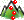 — Use terrain as background
Displays the particle system against the terrain specified in the tool's configuration file B.
-
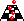 — Use floor as background
Displays the particle system against the generic floor image.
The floor image file is specified in the tool's configuration fileB.
-
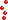 — Use no background
Displays the particle system against the background colour specified via the Background Colour toolbar button.
-
— Toggle grid
Toggles the visibility of a 1mx1m grid, displayed against the particle system.
-
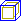 — Toggle bounding box
Toggles the visibility of the particle system's bounding box (yellow) and visibility box (blue).
-
— Play
Plays the current particle system.
-
— Stop
Stops the current particle system.
-
— Pause
Cycles between pausing and resuming the current particle system.
A — For details, see Keyboard shortcuts.
B — The ParticleEditor's configuration file is bigworld/tools/particleeditor/options.xml. For details on this file's grammar, see the document File Grammar Guide's section options.xml → ParticleEditor.
The status bar displays information about the current particle system. A typical status bar is illustrated below:
Status bar
The list below lists the pieces of information displayed in the status bar, as they appear:
-
Frame rate (in the example, 64 fps)
Frame rate being used to display the particle system.
-
Particles displayed (in the example, 66 particles)
Number of particles being currently rendered.
This number varies along the lifetime of the system.
-
Memory used (in the example, memory usage = 3.5552 kB)
Memory used by the current particle system.
The movement and scale gizmos availability depends on the sub-system's component selected in the Particle's sub-systems list box, as described in the sections below.
Displayed if one of the sub-system's components below is selected in the Particle's sub-systems list box:
-
Barrier
Depending on the Barrier Shape drop-down list box.
-
Force
-
Orbitor
-
Source
One movement gizmo is displayed for the Initial Position Generator field, and another for the Initial Velocity Generator field. Each of these fields will have two movement gizmos if the Generator Type drop-down list box is set to either Cylinder or Line.
-
Stream
Movement gizmo
Activated by the Alt keyboard shortcut (for details, see Keyboard shortcuts) and represented by red and/or green circles, this gizmo allows a particle's component to be scaled. Dragging the circle inwards or outwards uniformly shrinks or enlarges the component, respectively.
This gizmo is displayed if one of the sub-system's components below is selected in the Particle's sub-systems list box:
-
Barrier
-
If Barrier Shape is set to Cylinder:
Red circle controlling Radius.
-
If Barrier Shape is set to Sphere:
Green circle controlling Radius.
-
-
Source
-
If Initial Position Generator or Initial Velocity Generator is set to Cylinder:
Red circle controlling Radius.
-
If Initial Position Generator or Initial Velocity Generator is set to Sphere:
Green circle controlling Minimum Radius and red circle controlling Maximum Radius.
-

Scale gizmo
The list of ParticleEditor's keyboard shortcuts can be displayed via the Help → Keyboard Shortcuts menu item (for details, see Menu items).
The sections below list the ParticleEditor's keyboard shortcuts.
-
F1
Displays the help page, which can be left by pressing Esc.
-
F2
Allows renaming of the currently selected item in the Particle List.
-
F3
Performs the same function as the Play toolbar buttonA ——.
-
F4
Performs the same function as the Stop toolbar buttonA ——.
-
F5
Performs the same function as the Pause/Resume toolbar buttonA ——.
-
Ctrl+F5
Activates the Realtime Profiling console, which can be left by pressing Esc — for details, see Realtime Profiling console.
-
Ctrl+F7
Activates the Debug (Watcher) console, which can be left by pressing Esc — for details, see Debug (Watcher) console.
A — For details, see Toolbar.
-
Alt
-
If Debug (Watcher) consoleA is active
-
If key [0-9] in the alphanumeric keypad is pressed:
Selects item 40+[0-9], or 50+[0-9] (if Shift is pressed).
-
-
-
Ctrl
-
If clicking on a particle's sub-system check box
Causes all other sub-systems to acquire the opposite value of the current sub-system.
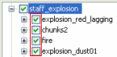Particle's sub-system check boxes
-
If Debug (Watcher) consoleA is active
-
If key [0-9] in the alphanumeric keypad is pressed:
Selects item 20+[0-9], or 30+[0-9] (if Shift is pressed).
-
-
-
Shift
-
If Debug (Watcher) consoleA is active If key [0-9] in the alphanumeric keypad is pressed:
Selects item 10+[0-9], 30+[0-9] (if Ctrl is pressed), or 50+[0-9] (if Alt is pressed).
-
A — Activated by F7 (for details, see Debug (Watcher) console).
-
Backspace
-
If Debug (Watcher) consoleA is active:
Returns the list to the previous branch of the watcher tree.
-
-
Caps Lock
-
ON
Increases the current camera speed. It will accelerate the camera movement, which speed is set by keyboard shortcuts (Ctrl+1, Ctrl+2, Ctrl+3, and Ctrl+4), or by Camera Speed toolbar buttonsD (
,,, and ).
-
OFF
Restores the camera speed set by keyboard shortcuts or by Camera Speed buttonsD.
-
-
Delete
Deletes the selected objects.
-
Enter
-
If Python consoleC is active and no command is specified:
Exits the console:
-
If Realtime Profiling consoleD is active
Expands or collapses the profiling element currently selected. Elements with children are indicated by an ellipsis (…) next to it.
-
If Debug (Watcher) consoleA is active
-
If the selected node is not leaf:
Navigates one level down in the watcher tree.
-
If the selected node is leaf:
Opens selected watcher for editing, or accepts typed value if it is already in Edit mode.
-
-
-
Esc
-
If any console is active
Exits the console.
NOTE: The different modes and consoles are activated in the following way:
-
Help mode — F1
-
Realtime profiling console — F5 (for details, see Realtime Profiling console)
-
Debug (Watchers) console — F7 (for details, see Debug (Watcher) console)
-
Python console — Ctrl+P (for details, see Python console)
-
-
If Debug (Watcher) consoleA is active
-
If the watcher is in Edit mode:
Leaves Edit mode.
-
If the watcher is not in Edit mode:
Exits the console.
-
-
-
Home
-
If Realtime Profiling consoleD is active
Scrolls the list to display the first page.
-
If Debug (Watcher) consoleA is active
Returns the list to root of the watcher tree.
-
-
Page Down
-
If Realtime Profiling consoleD is active:
Moves the selection to the next profiling element in the list. Same as ].
-
If Debug (Watcher) consoleA is active:
-
If the watcher is not in Edit mode:
Moves the selection to the next item in the list.
-
If the watcher is in Edit mode:
Decreases the watcher's value by 1, 10 (if Shift is pressed), 100 (if Ctrl is pressed), or 1,000 (if Alt is pressed).
-
-
A — Activated by F7 (for details, see Debug (Watcher) console).
B — For details, see Toolbar.
C — Activated by Ctrl+P (for details, see Python console).
D — Activated by F5 (for details, see Realtime Profiling console).
-
Numpad + (Plus sign)
-
If Realtime Profiling consoleB is active:
Scrolls the screen one line down.
-
If Debug (Watcher) consoleA is active:
Scrolls the watcher list down.
-
-
Numpad - (Minus sign)
-
If Realtime Profiling consoleB is active
Scrolls the screen one line up.
-
If Debug (Watcher) consoleB is active
Scrolls the watcher list up.
-
-
[ (Left square bracket)
-
If Realtime Profiling consoleB is active
Moves the selection to the previous profiling element in the list. Same as Page UpC.
-
-
] (Right square bracket)
-
If Realtime Profiling consoleB is active
Moves the selection to the next profiling element in the list. Same as Page DownC.
-
A — Activated by F7 (for details, see Debug (Watcher) console).
B — Activated by F5 (for details, see Realtime Profiling console).
C — For details, see Edit keys.
-
[0-9]
-
If Debug (Watcher) consoleA is active and the alphanumeric keypad was used:
Depending on the key modifier pressed (if any), selects the following item:
-
n -
10+
n(if Shift is pressed) -
20+
n(if Ctrl is pressed) -
30+
n(if Ctrl+Shift is pressed) -
40+
n(if Alt is pressed) -
50+
n(if Alt+Shift is pressed)
-
-
A — Activated by F7 (for details, see Debug (Watcher) console).
-
A
Moves the camera to the left.
-
If Orbit Camera toolbar buttonA —
 — is selected:
— is selected:-
If the camera is rotating clockwise:
Stops the camera rotation.
-
If the camera is not rotating:
Rotate the camera counter-clockwise.
-
-
-
D
Moves the camera to the right.
-
If Orbit Camera toolbar buttonA —— is selected:
-
If the camera is rotating counter-clockwise:
Stops the camera rotation.
-
If the camera is not rotating:
Rotate the camera clockwise.
-
-
-
E
Moves the camera up.
-
G
-
If Realtime Profiling consoleB is active:
Draws a graph for the profiling element currently selected.
More than one element can be graphed at any one time. Each one will be assigned a different colour, which will be used to display the element's name, and draw the graph itself.
-
-
Q
Moves the camera down.
-
S
Moves the camera backwards.
-
W
Moves the camera forward.
A — For details, see Toolbar.
B — Activated by F5 (for details, see Realtime Profiling console).
-
Alt+Page Down
-
If Debug (Watcher) consoleA is active and the watcher is in Edit mode
Decreases the watcher's value by 1,000.
-
-
Alt+Page Up
-
If Debug (Watcher) consoleA is active and the watcher is in Edit mode
Increases the watcher's value by 1,000.
-
-
Alt+[0-9]
-
If Debug (Watcher) consoleA is active and used alphanumeric keypad
Selects list item 4[0-9].
-
-
Alt+Shift+[0-9]
-
If Debug (Watcher) consoleA is active and the alphanumeric keypad was used
Selects list item 5[0-9].
-
-
Ctrl+Page Down
-
If Debug (Watcher) consoleA is active and watcher is in Edit mode
Decreases the watcher's value by 100.
-
-
Ctrl+Page Up
-
If Debug (Watcher) consoleA is active and watcher is in Edit mode
Increases the watcher's value by 100.
-
-
Ctrl+[0-9]
Ctrl+1 turns the Slow Camera toolbar buttonB (
) on.
Ctrl+2 turns the Medium Speed Camera toolbar buttonB () on.
Ctrl+3 turns the Fast Camera toolbar buttonB (
) on.
Ctrl+4 turns the Super Fast Camera toolbar buttonB (
) on.
-
If Debug (Watcher) consoleA is active and used alphanumeric keypad
Selects item 2[0-9].
-
-
Ctrl+Shift+[0-9]
-
If Debug (Watcher) consoleA is active and used alphanumeric keypad
Selects item 3[0-9].
-
-
Ctrl+H
Accesses the View → Show Action Selection menu item.C
-
Ctrl+I
Cycles through the available camera speeds.
This value can also be set by the Camera Speed group of toolbar buttons —
,,,.
-
Ctrl+M
Cycles through the available camera modes.
This value can also be set by the Camera Mode group of toolbar buttons —
,,,, .
-
Ctrl+O
Accesses the File → Open Particle Directory menu item.C
-
Ctrl+P
Activates the Python console, which can be left by pressing Esc. For details, see Tools Consoles.
-
Ctrl+S
Accesses the File → Save menu item.C
-
Ctrl+T
Accesses the Edit → Reload All Textures menu item.C
-
Ctrl+Y
Accesses the Edit → Redo menu item.C
-
Ctrl+Z
Accesses Edit → Undo menu item.C
Note: The mouse cursor must be over the viewport for this shortcut to be enabled.
-
Shift+Alt+[0-9]
See entry Alt+Shift+[0-9] in this table.
-
Shift+Ctrl+[0-9]
See entry Ctrl+Shift+[0-9] in this table.
-
Shift+Enter
-
If Debug (Watcher) consoleA is active and watcher is in Edit mode
Displays the watcher modification history.
-
-
Shift+Page Down
-
If Debug (Watcher) consoleA is active and watcher is in Edit mode
Decreases the watcher's value by 1.
-
-
Shift+Page Up
-
If Debug (Watcher) consoleA is active and watcher is in Edit mode
Increases the watcher's value by 1.
-
A — Activated by F7 (for details, see Debug (Watcher) console).
B — For details, see Toolbar.
C — For details, see Menu items.
The list below describes the ParticleEditor's mouse controls:
-
Right button drag
Moves the camera in the scene.
The table below describes the camera's movement:
Drag direction Camera movement Particle system movement Left Left Right Right Right Left Forward Up Down Backwards Down Up -
Scroll wheel rotate
Moves the camera forward and backwards.
-
If Space key is pressed:
Increases or decreases the camera speed, depending on the direction of the wheel rotation.
Performs the same functions as the
,,, and toolbar
buttons.C
-
-
Middle button click
Moves the camera so that the model is brought to the centre of the screen.
Performs the same function as the Zoom To Extents toolbar buttonA (
 ).
).
Particle systems need to be used with care, since they can easily have an adverse effect on the game's performance when targeting lower-end systems.
When designing the particle system, consider the points below:
-
Large particles may hinder performance (due to fill rate issues).
-
Each particle consumes memory, even if not being used (memory usage is shown in the status bar). Be sure to use a sink to remove unnecessary particles.
-
Set the the System Properties sub-panel's Capacity field to be just enough to contain the number of particles being used — this information is displayed in the status bar.
For details on the System Properties sub-panel, see System Properties sub-panel.
-
The Amp and Trail renderers on the Renderer Properties sub-panel need to cache each particle's history, and therefore consumes considerably more memory.
For details on the Renderer Properties sub-panel, see Renderer Properties sub-panel.
-
Use the System Properties sub-panel's Max LOD field to remove the particle from render once it reaches a certain distance from the player.
For details on the System Properties sub-panel, see System Properties sub-panel.
Accessed via the Help → Keyboard Shortcuts menu item, the Keyboard Shortcuts dialog box displays a list of shortcuts available on ParticleEditor. For details on the complete list, see Keyboard shortcuts.
Keyboard Shortcuts dialog box
Assets used to populate the world can be accessed via the Asset Browser panel. For details, see Asset Browser panel.
This node gives you access to ambient particle systems created in ParticleEditor, so you can place them in your world.
Note
For more information on particles, see:
-
document Client Programming Guide's section Particles.
-
document Content Creation Manual's lessons (document accessed by pressing F1 or by selecting the Help → Content Creation menu item — for details, see Menu items) lessons:
-
Manage Resources → Particles
-
Generate Particles for Special Effects
-
For details on the grammar of particle files, see the document
File Grammar Guide's section <particle>.xml.
This node gives access to bitmap images (.bmp), TrueVision Targa Graphic (.tga), and Microsoft Direct Surface (.dds) files, which can be assigned as the source for sprite-, amp-, trail-, and blur-based particles in the Renderer Properties sub-panel (for details on this panel, see Renderer Properties sub-panel).
This node gives access to visual files (.visual), which contain node hierarchy, vertices, indices, materials used for rendering objects, and the BSP tree used for collision detection.
Visual files can be assigned as the source for mesh-based particles in the Renderer Properties sub-panel (for details on this panel, see Renderer Properties sub-panel).
Note
For more information on visuals, see the document Content Creation Manual's lessons (document accessed by pressing F1 or by selecting the Help → Content Creation menu item — for details, see Menu items)
-
Create Low-Polygon Characters → Exporting the character
-
Add Animations to Characters → Importing a new character
For details on the grammar of.visual files, see the document File Grammar Guide's section .visual.
This node lists the material files (.mfm), which contain material information that includes bitmap references and effect files (.fx), which in turn gives access in ModelEditor to artist-editable features in that file.
Material files are a handy way of storing complex material property settings.
Note
For more information on MFMs, see the document Content Creation Manual's lessons (document accessed by pressing F1 or by selecting the Help → Content Creation menu item — for details, see Menu items):
-
Manage Resources → Organising art resources — Sets
-
BigWorld shaders and Materials
-
Create a New Material
-
Create and Apply Animated Texture Maps
For details on the grammar of .mfm files, see the document File Grammar Guide's section .mfm.
This panel gives access to assets through the Asset Browser, an interface that is available in WorldEditor, ModelEditor, and ParticleEditor. For details, see Asset Browser.

Asset Browser panel
Drag-and-drop operation is specific to the tool that implements it, and the type of asset being dragged, as described in the table below (asset types are listed in the order in which they appear in the Asset Tree):
| Asset type | Drop locationA | Effect |
|---|---|---|
| Particle | Viewport | Opens the dragged particle system for editing. |
| Texture | Renderer Properties sub-panel's Texture File drop-down listB. (only if Renderer is set to Sprite, Amp, Trail or Blur) | Sets the texture file to be used for current particle's sub-system. |
| Visual | Renderer Properties sub-panel's Visual File drop-down listB. (only if Renderer is set to Visual) | Sets the visual file to be used for current particle's sub-system. |
| MFM | Renderer Properties sub-panel's MFM File drop-down listB. (available for mesh-based particles) | Sets the MFM file to be used to override the mesh's material settings specified in its visual file. |
|
A — If the asset file is dropped in the Favourites special virtual folder, then it is added to that folder. For details, see Asset file. |
|
B — For details on these fields, see Renderer Properties sub-panel. |
Drag-and-drop operation in ParticleEditor's Asset Browser panel
Defined in Asset Browser's configuration file (for details, see Customisation), virtual folders list files of a specific asset type.
For details on the listed asset types, see Assets.
The panel is divided in two parts:
-
General sub-panel
The upper sub-panel, which lists all particle systems in the current folder, with their sub-systems and their components.
-
Component sub-panel
The lower sub-panel, containing the configuration options of the sub-system's component selected in the Particle List of the General sub-panel.
System panel
The panel contains the settings to be applied to the selected particle system.
General sub-panel
The list below describes the fields on this sub-panel:
-
Saves changes to the current particle system.
Performs the same function as the File → Save Particle System menu item.A
-
Current folder
Folder which particle systems are displayed in Particle list.
The path is relative to the resource folder selected by the Open Folder —
— button.
-
Opens the Open dialog box, where you can specify a new current folder.
The dialog box displays only the folders in the resources folders list (or
<res>). For details on how BigWorld compiles this list, see Starting the Tools.If this list is not set, then it will display the folders specified in the Path tag in bigworld/tools/particle_editor/paths.xml (for details on this file's grammar, see the document File Grammar Guide's section paths.xml).
Performs the same function as the File → Open Particle Directory menu item.A
-
Filter
Filter settings for particle system's name.
Please note that the filter applies only to particle-system's level.
For details, see Asset Browser panel.
-
Particle list
Hierarchical list with particle systems' information.
-
Particle systems
List of particles system files under the current folder (corresponds to the MetaParticleSystem object).
The selection/clearing of the check box propagates to all sub-systems.
-
Particle's sub-systems
List of particle sub-systems of the particle system (corresponds to the ParticleSystem object).
Individual sub-systems can be turned off by clearing its check box.
Pressing Ctrl while clicking the check box causes all other sub-systems to acquire the opposite value of the current sub-system.
-
Sub-system's components
List of components of the particle's sub-system.
As a minimum, every particle sub-system has the components System Properties and Renderer Properties.
Individual sub-systems can be turned off by clearing its check box, with the exception of System Properties and Renderer Properties.
Selecting a component causes its settings to be displayed in the Component sub-panel.
For more details, see the following sections:
-
-
-
-
Adds the component selected in Component List to the particle sub-system selected in Particle List.
-
Component list
List of particle components available to particle sub-systems.
Note that the System Properties and Renderer Properties components are not listed, since they are always created with new particle sub-systems by default, and cannot be deleted.
-
Creates a new particle system, sub-system, or component, depending on the type of item currently selected in Particle List.
-
If a particle system is selected:
Creates a new particle system, named system[n]B, containing sub-system named component, with components System Properties and Renderer Properties.
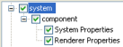Add button — If a particle system is selected
-
If a sub-system is selected:
Creates a new sub-system, named component[n]B, with the components System Properties and Renderer Properties.
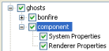Add button — If a sub-system is selected
-
If a component is selected:
Creates a component of the type selected in Component List, named
<component_type>nB, and displays its respective configuration sub-panel.If a component involves 3D tools, then a gizmo will be displayed in the viewport.
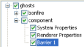Add button — If a component is selected
-
-
Copies the selected particle system, sub-system, or component.
If a particle system or sub-system is selected, then it will be named Copy of
<item_name>. If a sub-system's component is selected, then will be named<component_type>nB. -
Deletes the selected particle system, sub-system, or component.
The user is prompted to confirm the operation only if a particle system or sub-system is selected.
The button will be disabled if the sub-system component selected is either System Properties or Renderer Properties.
A — For details, see Menu items.
B — Where n is a sequential number.
This is the lower part of the Systems panel, and displays the configuration options of the component selected in General sub-panel's Particle List.
This sub-panel allows the user to set the basic properties of the particle sub-system.
System Properties sub-panel
The list below describes the fields on this sub-panel:
-
Capacity
Maximum number of particles to be generated by the system.
Once this limit is reached, no more particles will be created, until some of them have been removed (via a Sink).
Value range is from 1 through 65536.
-
Wind factor
Amount of effect that the wind will have on the particle system's velocity.
Value ranges from 0.0 (wind velocity will not be added to particles' velocity, i.e., particles will not be affected by wind) to 1.0 (wind velocity will be fully added to particles' velocity).
-
Max LOD
Furthest distance from camera for which the particle system will still be drawn.
This sub-panel allows you to set the basic properties of the particle sub-system.
Renderer Properties sub-panel
This sub-panel contains various sections, one for each renderer:
-
Sprite section
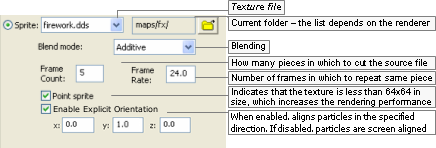Sprite section
-
Mesh section
Mesh section
-
Visual section
Visual section
-
Amp section
Amp section
-
Trail section
Trail section
-
Blur section
Blur section
The list below describes the fields on this panel:
-
World dependent
Sets whether the particle system should be drawn in the world's coordinate system.
-
Local dependent
Sets whether the particle system should be drawn in the camera's coordinate system.
If this check box is selected, then particles will move with the particle system that spawned them.
-
View dependent
Sets whether the particle system should be drawn in the camera's coordinate system.
If this check box is selected, then moving the camera will move the particles with it.
Useful for screen-based effects, e.g., if the player was to see stars after a concussion.
-
Renderer
The renderer to use on the particle sub-system.
-
Sprite
A sprite is a bitmap that rotates to face the camera perspective.
This renderer provides various blending modes, described in the Blending Mode lix box below.
-
Mesh
Allows the rendering of meshes exported from 3dMax or Maya using the Visual Exporter's Mesh Particles option button (for details, see 3ds Max visual exporter, and Exporting).
This allows blending mode and tint shaders to be used.
-
Visual
Allows a regular mesh to be drawn as a particle system.
It does not support tint shaders, unless they have a specially written shader, nor does it support blend modes like Mesh renderers.
-
Amp
Draws a series of sprites from the particle system's origin to each particle. Ideal for electrical effects.
-
Trail
Draws a trail behind each particle, while retaining information about previous positions of each one, allowing you to use centrifugal forces like Orbitor.
-
Blur
Draws a trail behind each particle, based on its velocity, but does not retain information about previous positions of each particle.
It works by drawing multiple particles along one vector, therefore it might not work as intended if you have centrifugal forces controlling the particles (in this case, use Trail instead).
-
-
Renderer fields
-
Texture file (available for Sprite, Mesh, Amp, Trail, and Blur)
List of files on the folder specified in the
button, and that are relevant to the
specified renderer.
For the Mesh renderer, only visual files (.visual) will be listed. For all other renderers, these files will be listed: Bitmap images (.bmp), TrueVision Targa Graphic (.tga), and Microsoft Direct Surface (.dds).
-
Current folder (available for Sprite, Mesh, Amp, Trail, and Blur)
Opens the Open dialog box, where you can specify the folder from which to read the source files.
The dialog box displays only the folders in the resources folders list (or
<res>— for details on how BigWorld compiles this list, see Starting the Tools), and the ones listed in the configuration file bigworld/tools/particle_editor/paths.xml. -
Blend mode (available for Sprite)
List of available modes to blend the particle.
The options are described below:
-
Additive
Adds sprite's particle colour to the background using the alpha of the sprite's image as blend factor.
-
Additive alpha
Uses the inverse of the sprite's alpha as a mask on the background, and adds the sprite's colour.
-
Blended
Blends particles using the sprite's alpha channel.
-
Blended colour
Uses colour values to blend particles, instead of the alpha channel.
-
Blended inverse colour
The same as Blended colour. Available for backwards compatibility.
-
Solid
Renders particles as solid sprites, with no blend.
-
Shimmer
Shimmers the background, using the alpha channel to mask the shimmer.
-
Source alpha
Uses the sprite's alpha channel as a mask where alpha values less than 128 are transparent.
-
-
Frame count (available for Sprite)
Number of parts in which to cut the source file.
The Frame Count and Frame Rate fields provide a cheap way for using animated textures (the other method is using an animated texture — .texanim — file).
In this case, the source file should be a single bitmap with multiple frames in it. The Texture File on the right would have a Frame Count value of 3.
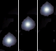Example source file
-
Frame rate (available for Sprite)
Number of frames displayed per second.
For the example texture file above, a Frame Rate value of 0.5 would result in the lie cycle displayed below.
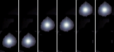Example effect of Frame Rate value of 0.5
-
Point sprite (available for Sprite)
Indicates that the sprite is smaller than 64x64 pixels and has no animation, which reduces the amount of necessary memory, thus increasing the rendering performance.
-
Enable Explicit Orientation (available for Sprite)
When enabled, aligns particles in the specified direction. If disabled, particles are aligned to the screen.
-
Sorting (available for Mesh)
Determines the quality of the alpha-blending sorting and makes a trade-off between quality and speed.
The options are described in the list below:
-
None
The particle system as a whole will be rendered in order with respect to other sorted objects, and the triangles contained within will be sorted back to front. The particles themselves, however, will be rendered out of order.
Choose this method if speed is paramount and the visual artefacts introduced are not noticeable.
-
Quick
Sorting will be done in a way that allows the renderer to still draw in groups of 15.
This introduces some sorting inaccuracies, but maintains most of the speed of unsorted mesh particles.
This method is highly recommended if the sorting inaccuracies are not noticeable.
-
Accurate
Sorting of individual objects and triangles is performed.
This provides the most accurate sorting, but breaks the ability of the renderer to perform fast 15-at-a-time rendering, thus decreasing rendering performance.
If you choose this sorting method, then make sure to double-check the performance hit induced.
-
-
Width (available for Amp, Trail, and Blur)
Thickness in which to draw the image in the source file.
-
Texture length (available for Amp)
How compressed or elongated the original texture will be when rendering the particle — the particle is composed of continuous segments of the specified texture.
Fractional values below 1 specify the percentage by which the original image should be compressed, and values above 1 specify the percentage by which the image should be stretched.
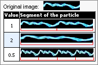Example
-
Steps (available for Amp and Trail)
-
For Amp:
Number of kinks in each line.
-
For trail:
Number of times that the sprite will be drawn behind each particle, thus actually altering the length of the trail.
-
-
Variation (available for Amp)
How much to bend each line.
-
Circular (available for Amp)
Indicates that the sprites should be drawn connecting each particle to the next, instead of connecting each particle to the point of origin.
-
Time (available for Blur)
How long to extend the particle back along its current velocity vector.
-
This sub-panel allows the user to specify the dynamics of the particle sub-system, i.e., the particles' source position, how much they should spread, and the number of particles to be created, among other things.
Source sub-panel
The list below describes the fields on this panel:
-
Position
Group of fields defining a space within which to create the particles.
-
Initial position generator
Geometry of the position generator.
The list below describes the available options, and how they affect the From and To fields:
-
Box (Enabled coordinates: From and To)
-
Cylinder (Enabled coordinates: From and To)
-
Line (Enabled coordinates: From and To)
-
Point (Enabled coordinates: From)
-
Sphere (Enabled coordinates: From)
-
-
Show
Toggles the visibility of the area defined for the position generator, and of the 3D gizmos attached to its initial and final (if applicable) points.
Note that changing the position of the 3D gizmos in the viewport automatically updates the appropriate From and To coordinates in the sub-panel.
-
From
The x, y, and z coordinates of the initial point of the position generator.
These values are automatically updated if you move the 3D gizmo in the viewport.
-
To
The x, y, and z coordinates of the final point of the position generator.
These values are automatically updated if you move the 3D gizmo in the viewport.
Only enabled if Initial Position Generator is set to Box, Cylinder, or Line.
-
-
Velocity
Defines a set of velocities that will be given to the particles on their creation.
-
Initial velocity generator
Geometry of the velocity generator.
The list below describes the available options, and how they affect From and To fields:
-
Box (Enabled coordinates: From and To)
-
Cylinder (Enabled coordinates: From and To)
-
Line (Enabled coordinates: From and To)
-
Point (Enabled coordinates: From)
-
Sphere (Enabled coordinates: From)
The gizmos define the possible velocity vectors — they are drawn from within the Initial Position Generator, and end within the Initial Velocity Generator.
The origin of the velocity vectors is determined by the type specified for it:
-
Box — Bottom corner of the box.
-
Cylinder — Centre of the base.
-
Line — Base point of the line.
-
Point — Point itself.
-
Sphere — Centre of the sphere.
-
-
Show
Toggles the visibility of the area defined for the velocity generator, and of the 3D gizmos attached to its initial and final (if applicable) points.
Note that changing the velocity of the 3D gizmos in the viewport automatically updates the appropriate From and To coordinates in the sub-panel.
-
From
The x, y, and z coordinates of the initial point of the velocity generator.
These values are automatically updated if you move the 3D gizmo in the viewport.
-
To
The x, y, and z coordinates of the final point of the velocity generator.
These values are automatically updated if you move the 3D gizmo in the viewport.
Only enabled if Initial Velocity Generator is set to Box, Cylinder, or Line.
-
Velocity inheritance factor
Amount of effect that the model to which the particle system is attached to will have on its final velocity.
Value ranges from 0.0 (the model's velocity will not be added to the particles' velocity, i.e., the particles will not be affected by the model's movement) to 1.0 (the model's velocity will be fully added to the particles' velocity).
-
-
Triggers/ Grounded
Group of fields for time-triggered particle sub-systems.
-
Time trigger
Indicates that the particle sub-systems will periodically generate particles.
All particle systems placed by WorldEditor must be time-triggered.
-
Emitter rate (particle/s)
Number of particles to be generated per second.
If the source seems to pause while releasing particles, then check the System Properties panel's Capacity field, and the setting for the Sink component.
-
Active period (s)
Period during which new particles will be generated.
After the Active Period, the particle system enters the Sleep Period.
-
Sleep period (s)
After an Active Period, a Sleep Period (i.e., a period of inactivity) might be specified — this type of particle behaviour is useful for bursts of activity.
If Min is set to zero, and Max is set to -1, then particles will be continuously generated.
If Max is set to -1, then only the Min value is used.
-
Min
Minimum period of inactivity (in seconds).
-
Max
Maximum period of inactivity (in seconds).
-
-
Motion trigger
Indicates that the particle sub-system is attached to a moving object.
Particles will be emitted per distance travelled by the sub-system.
-
Motion sensitivity (m/part)
How quickly the particles are released with motion, measured in metres per particle. This corresponds to the distance the system must move to release one particle.
To test this feature, change the selection in Sub-System Components list box to System Properties, then move the 3D gizmo.
-
Grounded
Indicates that particles should (if possible) be spawned at ground level.
-
Drop distance (m)
Maximum distance (in metres) allowed between the ground and particle's initial height (specified in Initial Position Generator's From's y field) if particle is to be generated.
In the example below, if Drop Distance is set to a value greater than 3.0, then no particles will be generated.
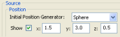Example
-
-
Particle size
Defines the limits for randomising the size of the particles.
-
Minimum
Minimum size of particles.
-
Maximum
Maximum size of particles.
-
-
Sprite only
Group of fields defining initial orientation and spin rate for sprite-based particles.
-
Initial orientation (deg)
Inclination to apply to the particles (in degrees).
-
Spin rate (rev/s)
Number of revolutions per second to apply to the particles.
-
Randomise
If a value is not specified for Randomise, then all generated particles will contain the initial inclination/spin rate specified in this field. Otherwise, it will be randomised between the value in this field and the one in Randomise.
-
Initial orientation
Maximum value to be used for randomising the particles' inclination.
-
Spin rate
Maximum value to be used for randomising the particles' spin rate.
-
-
-
Mesh only
Group of fields defining initial orientation and spin rate for mesh-based particles.
-
Spin rate (rev/s)
-
Random spin
Indicates that the particles should revolve randomly, according to the settings below.
-
Min
Minimum value to be used for randomising the particles' spin rate.
-
Max
Maximum value to be used for randomising the particles' spin rate.
-
-
Randomise (deg range)
Indicates that the particles' pitch and/or yaw should be randomised according to Pitch and Yaw settings.
If a value is not specified for Randomise, then all generated particles will contain the pitch/yaw specified in this field. Otherwise, it will be randomised between the value in this field and the one in Randomise.
-
Pitch
Pitch of the initial position of the particles.
-
Yaw
Yaw of the initial position of the particles.
-
-
Pitch (Randomise)
Maximum value to be used for randomising the particles' pitch.
-
Yaw (Randomise)
Maximum value to be used for randomising the particles' yaw.
-
-
Miscellaneous
-
Number of particles to spawn on demand
Number of particles to create, for non-continuous emitters.
This field is mandatory for non-continuous emitters, which are designed to be dynamically created by the game (and not via WorldEditor). For these particle systems, a game event must force the creation of particles.
-
Time (in seconds) allowed for the creation of particles.
If the particles are not created within this time frame, then they will not be spawned. This is useful for grounded particles (see the Grounded check box), where system performance can be affected if too many particles are spawned.
-
The maximum speed
This is the maximum speed (in m/s) at which the particle system can be moving and still generate particles.
-
Delay
This is the delay in seconds that the action will wait before it starts.
-
This sub-panel allows the user to specify how long the particles should live.
Sinks are essential for most particle systems, because they remove unwanted particles and thus prevent the particle system from reaching its maximum capacity, at which point no more particles will be spawned.
Sinks can remove particles using the particle's age or its speed.

Sink sub-panel
The list below describes the fields on this panel:
-
Maximum age
Maximum lifetime (in seconds) of each particle.
A particle might be removed before its lifetime expires, if it reaches Minimum Speed.
-
Minimum speed
Minimum speed (in metres per second) that the particles may have before being removed.
A particle might be removed without reaching Minimum Speed if its lifetime expires.
-
Outside only
This ensures that the particles can only exist in outside chunks.
If a particle moves into and indoor chunk it is removed.
-
Delay
This is the delay in seconds that the action will wait before it starts.
This sub-panel allows the user to specify a barrier for the generated particles, and how they should interact with it.
Barriers can be used to bounce particles, remove particles (acts like a sink), or allow particles. To make particles bounce off the terrain, use a Collide sub-system instead of a Barrier. For more details, see Collide sub-panel .
Barrier sub-panel
The list below describes the components of the Barrier sub-panel:
-
Barrier shape
Shape of the barrier.
Contains the following options:
-
None
-
Vertical cylinder
-
Box
-
Sphere
-
-
Barrier effect
How the particles should interact with the barrier.
Contains the following options:
-
Bounce
-
Remove
-
Allow
-
Wrap
-
-
Delay
This is the delay in seconds that the action will wait before it starts.
This sub-panel allows the user to specify a second force (independent of the initial force generator) to be applied to all particles in the sub-system.
Force sub-panel
This component is different from the Stream component in which it does not have a half-life setting (for details, see Stream sub-panel).
The list below describes the fields in this panel:
-
x, y, z
Direction/magnitude of the force to be applied to the particles in the sub-system.
-
Delay
This is the delay in seconds that the action will wait before it starts.
This sub-panel allows you to specify how to apply a streaming effect to each particle.
Stream sub-panel
This component is similar to the Force one, except in that it allows control of the amount of force imparted to each particle per time, via the Half-Life field (for details on the Force panel, see Force sub-panel).
The list below describes the fields in this panel:
-
Stream direction
Direction/magnitude of the force to be applied.
-
x, y, z
Coordinates for the direction/magnitude of the force to be applied to the particles.
-
-
Half-life (sec)
Number of seconds that the particle's velocity will take to move halfway towards the stream's velocity. A negative number means infinite half-life, i.e., the particles will not be affected by the stream.
-
Delay
This is the delay in seconds that the action will wait before it starts.
This sub-panel allows the user to add a jittering/wobbling effect to the generated particles.
Jitter sub-panel
The list below describes the fields in this panel:
-
Affect position
-
Check box
Indicates that the jitter effect should be applied to the particles' positions.
-
Drop-down list box
Shape within which the effect positions are created. Larger objects result in larger differences in particle position, resulting in a stronger jitter effect.
The available options are:
-
Box
-
Cylinder
-
Line
-
Point
-
Sphere
-
-
-
Affect velocity
-
Check box
Indicates that the jitter effect should be applied to the particles' velocities.
-
Drop-down list box
Shape within which the velocity vectors are created. Larger objects result in larger effect vectors, resulting in a stronger jitter effect.
The available options are:
-
Box
-
Cylinder
-
Line
-
Point
-
Sphere
-
-
-
Delay
This is the delay in seconds that the action will wait before it starts.
This sub-panel allows the user to specify how to change the size of the particles over time.
Scaler sub-panel
The list below describes the fields in this panel:
-
Final particle size
Final size of the particle (in metres). Might be smaller than particle's original size.
-
Rate
Number of metres per second by which to increase or decrease the particle.
-
Delay
This is the delay in seconds that the action will wait before it starts.
This sub-panel allows the user to specify how to colour the particles over time.
Tint Shader sub-panel
Tint Timeline and Selected Tint
The list below describes the fields on this panel:
-
Tint Timeline
-
Time point
Point of transition between two tints of the particle.
-
Alpha value
Displays the alpha value — in grey gradient — of each Tint Point in the timescale, and the values in between.
Bright areas indicate low value for alpha (low opacity), while dark areas indicate high value for alpha (high opacity).
-
Tint gradient
Displays the tint on each Tint Point, and the values in between.
-
Tint point
Tint selected for the particle at the specified point in the timescale.
Can be dragged up and down (except the first and last one), with value in the timescale being automatically updated.
-
Selected tint indicator
Indicates which Tint Point is currently selected.
The Selected Tint group of fields is automatically updated to reflect the selected tint values.
-
-
Fog blend ratio
This is the ratio of fog colour to blend with the tint colour.
-
Tint cycle time
Duration for the tint transition process.
The Time Point values in the Tint Timeline group are automatically updated.
-
Loop tint cycle
Indicates that the tint transition process should be continuously applied to the particle sub-system.
-
Selected tint
-
Tint slider/ selector
Composed of 2 parts:
-
Slider
Colour to be applied to the particle in the selected Time Point.
-
Selector
Luminosity of the colour selected in the slider part of this field.
The tint might also be specified in the RGB Value fields. The Tint Gradient and Tint Point in the Tint Timeline, and the RGB Values are automatically updated with the values selected.
-
-
Alpha sliderA
Opacity of the particle in the selected Time Point, in values between 0 and 1.
The brightest area of the slider indicates the lowest value for alpha (lowest opacity), while the darkest area indicates the highest value for alpha (highest opacity).
The Alpha Value in the Tint Timeline and the Alpha field are automatically updated with the value selected.
-
RGB values
-
R, G, B
Red, green, and blue components of the tint in the selected Time Point.
The tint might also be specified in the Tint Slider/Selector.
The Tint Gradient and Tint Point in the Tint Timeline, and the Tint Slider/Selector are automatically updated with the values specified.
-
-
AlphaA
Numeric value for the alpha to be applied to the particle in the selected Time Point.
Small values indicate low opacity, while great values indicate high opacity.
The Alpha Value in the Tint Timeline, and Alpha Slider are automatically updated with the value selected.
-
-
Add new tint
Adds a new Time Point in the Tint Timeline.
The new Time Point is added on top of the final one, so it is not immediately visible to the user. You have to drag it up in the Tint Timeline before specifying its settings.
-
Delete selected tint
Deletes the Time Point currently selected in the Tint Timeline.
The first and last Time Points cannot be deleted.
-
Delay
This is the delay in seconds that the action will wait before it starts.
A — While the Alpha slider varies from 0 to 1, the Alpha field varies from 0 to 255.
This component is used to determine that the generated particles should be clamped to the origin of the particle sub-system.
There are no settings for this component, just the delay in seconds that the action will wait before it starts.
This sub-panel allows the user to specify a point around which the particles should orbit along the y-axis.
Orbitor sub-panel
The list below describes the fields on this panel:
-
Orbit y-axis
-
x,z
Coordinates of the point around which the particles will orbit along the y-axis.
To have the particle orbit around a different axis while placed in the word, simply rotate the particle sub-system in WorldEditor.
-
-
Angular velocity
Angular velocity of the orbit (in degrees per second).
-
Affect velocity
Indicates that the velocity should also be rotated with the particle.
If this field if not selected, then the velocity will always be in the same direction.
-
Delay
This is the delay in seconds that the action will wait before it starts.
This sub-panel allows the user to specify that a certain number of the particles should be spawned with a flare effect.
Flare sub-panel
The list below describes the fields in this panel:
-
Flare name
Texture used to apply the flare effect to the particles.
-
Folder
Opens the Open dialog box, where you can specify the folder from which to read the source files.
-
Flare step
Frequency in which to apply the flare effect to the particles. Every nth particle will have the flare effect.
-
Colourize
Determines whether to use the settings specified for the Tint Shader component (if any) to colour the particles (for details, see Tint Shader sub-panel).
-
Use particle size
Determines whether the particle should be sized as per its source file, instead of using the size of the chosen texture for the flare.
-
Delay
This is the delay in seconds that the action will wait before it starts.
This sub-panel allows the user to specify how much the particles should bounce when hitting the ground or other objects.
Unlike the Splat component, which determines that the particles should be removed immediately after hitting the ground or collidable objects, the particles with the Collide component are bounced according to the specified Elasticity. For details on the Splat component, see Splat sub-panel.
Collide sub-panel
The list below describes the fields in this panel:
-
Elasticity
Amount of bounce to apply to the particle when hitting the ground or other objects (in which case their BSP trees are used for the calculation).
The elasticity is applied as a factor to which the incoming velocity should be multiplied to determine the outgoing velocity.
For example, if Elasticity is set to 0.75 and a particle hits the ground at a downward velocity of 1.0 m/s, then it will bounce upwards at a velocity of 0.75 m/s.
-
Enable sound
-
Enable Sound
Determines whether a sound should be played when particles hit the ground or other objects.
-
Sound Project
The name of the sound project file from which to get the sound from. This is the project name is specified from the File
<engine_config>.xml. -
Sound Group
This is of the sound group to select the sound from.
-
Sound Name
The actual sound event to play when collision occurs.
-
-
Delay
This is the delay in seconds that the action will wait before it starts.
The MatrixSwarm effect allows particles to be attached to a node or a list of nodes. This involves writing Python scripts in the game, in order to attach this sub-system correctly.
Adding a MatrixSwarm in ParticleEditor exposes the functionality in the game script.
There are no settings for this component, just the delay in seconds that the action will wait before it starts.
MatrixSwarm sub-panel
This sub-panel allows the user to specify a magnet effect to the particle's point of origin.
Magnet sub-panel
The list below describes the fields in this panel:
-
Magnet strength
Strength of the magnet.
Determines how strongly the particles are attracted to it, and how fast they move in its direction.
-
Minimum distance for force calculations
Area around the magnet in which it will not exert force.
-
Delay
This is the delay in seconds that the action will wait before it starts.
The Splat component is used to specify that the particles should disappear once they hit the ground or other objects.
Unlike the Collide component, which determines that the particles should bounce after hitting the ground or collidable objects, the particles with the Splat component are removed immediately after the collision (for details on the Collide component, see Collide sub-panel).
There are no settings for this component, just the delay in seconds that the action will wait before it starts.
Splat sub-panel
As mentioned in the beginning of this chapter, a particle system's XML file can be loaded by C++ coding, or Python scripting. The following sub-sections illustrate how to load the particle system with each mechanism.
The example below illustrates how to load the bonfire particle system via C++:
// FOR A META PARTICLE SYSTEM MetaParticleSystemPtr system = new MetaParticleSystem(); system->load( "bonfire.xml", "particles/"); // to place the particle system somewhere other then the origin, attach it PyMetaParticleSystem* pySystem = new PyMetaParticleSystem( system ); pySystem->attach( myMatrixLiaisonPtr ); // FOR AN INDIVIDUAL PARTICLE SYSTEM // ParticleSystem::load will only load the first system in the file ParticleSystemPtr system = new ParticleSystem(); system->load( "bonfire.xml", "particles/"); // can attach as shown above or explicitly set the position (not usu. Required) Vector3 newPosition(1.f, 1.f, 1.f); system->explicitPosition(newPosition);
Example of placing a particle system via C++
To understand the ParticleEditor interface, it is useful to first describe how a BigWorld particle system works.
A BigWorld particle system consists of the following classes:
-
MetaParticleSystem
-
ParticleSystem
-
ParticleSystemAction
-
ParticleSystemRenderer
Along with their python wrappers:
-
PyMetaParticleSystem
-
PyParticleSystem
-
PyParticleSystemAction
-
PyParticleSystemRenderer
All classes can be found in the Particle project.
The following sub-sections describe each of these classes.
This is a container for a number of ParticleSystem instances, and is generally only used for static particle systems that are to be placed in WorldEditor.
This allows an artist to create a particle effect using a group of individual particle systems. For example, a fire could consist of flame, smoke and spark particle systems. Those could then be grouped into a fire MetaParticleSystem, which would appear as one object to WorldEditor.
A world builder can easily place such objects without concerns about each component.
This class contains the high-level information about the particle system, such as:
-
How many particles the system can contain.
-
Where the system is located.
-
How the system will be rendered — all particles in a ParticleSystem are rendered through a common ParticleSystemRenderer.
-
List of actions that determine how the particles behave.
This is a base class implementing a variety of actions on particles, which affect each one over its entire lifetime.
The most useful actions are described in the list below:
-
BarrierPSA
An invisible, impenetrable barrier in the shape of a box, sphere, or vertical cylinder.
At the barrier, particles can rebound, or be removed.
-
CollidePSA
Allows particles to collide with the collision scene.
If particles are mesh-based, then a rotation will be applied on collision — the rotation property is contained in the colour_ member.
-
FlarePSA
Draws a lens flare at the nth particle created (flare step).
-
ForcePSA
Applies a force to all particles in a particular direction.
-
JitterPSA
Adds random position or velocity to the particles.
-
MagnetPSA
Accelerates particles towards or away from a point.
-
OrbitorPSA
Causes particles to orbit around a vertical line.
-
ScalerPSA
Gradually grows or shrinks particles to a particular size.
-
SinkPSA
Destroys particles of a particular age or minimum velocity.
-
SourcePSA
Creates particles of a particular size, at a particular rate, within a given volume.
The rates can be time-triggered, motion-triggered, or neither, in which case the particles are created on demand by the application.
Only time-triggered particles can be previewed by the interface.
-
StreamPSA
Converges particles to a given velocity over time (half-life concept for the magnitude of the effect).
-
TintShaderPSA
Changes the tint of a particle over time (for sprites only).
This class provides various ways of rendering particles, as described in the list
-
Amp
Draws a series of sprites from the particle system's origin to each particle.
Ideal for electrical effects.
-
Blur
Draws a trail behind each particle, based on its velocity, but does not retain information about previous positions of each particle.
It works by drawing multiple particles along one vector, therefore it might not work as intended if you have centrifugal forces controlling the particles (use Trail instead).
-
Mesh
Uses a mesh (.visual file) exported from 3dMax or Maya using the Visual Exporter's Mesh Particles option button (for details, see 3ds Max visual exporter and Exporting.)
This has blending modes and allows tints to be applied to mesh particle systems.
-
PointSprite
A point sprite is a special case of Sprite renderer, in that it does not support textures bigger than 64x64 pixels or that have animation.
This restriction is made in order to decrease the amount of memory required, thus increasing rendering performance.
-
Sprite
A sprite is a bitmap that rotates to face the camera perspective. This renderer provides various blending modes.
-
Trail
Draws a trail behind each particle, while retaining information about previous positions of each particle, allowing you to use centrifugal forces like Orbitor.
-
Visual
Uses an arbitrary mesh (.visual file) as a particle.
This does not allow blending modes or tint shading without specialized shaders
For more details on the settings for each rendering mode, see Renderer Properties sub-panel.